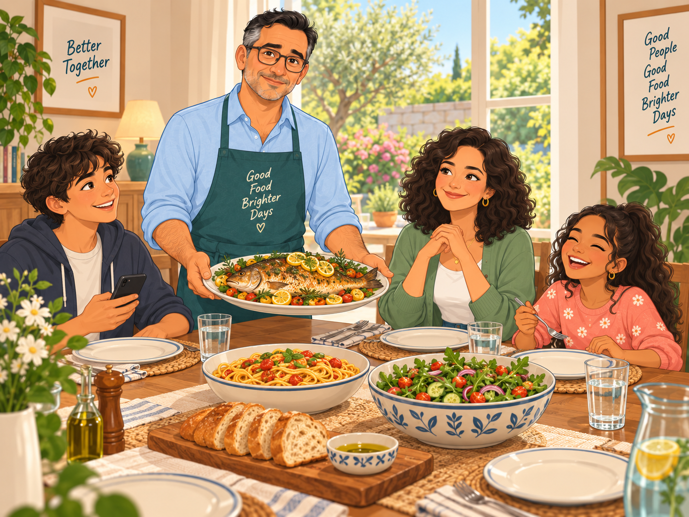

Football, cooking, a guitar. Talk about what you love doing, and what you can't do.
Lesson 5 of the series. ← Lesson 4: A Working Day · Lesson 6: The Airport →
These are the new words for The Weekend. Match each word (1–8) to its meaning (A–H). Say your answers out loud — "I think 1 is D" — then check.
1 = F (to play) · 2 = C (to cook) · 3 = G (a recipe) · 4 = A (to swim)
5 = H (the guitar) · 6 = D (a friend) · 7 = B (slow) · 8 = E (to sing)

Leo's weekend, and Anna's. Read each part. Then try the questions from memory, and answer the last one about you.
Saturday. Leo sleeps until nine. Then he plays football with his friends in the park. He is not very good, but he loves it. After football, they have a coffee and talk. About football, of course.
Sam: Leo, you are slow today.
Leo: I'm forty-eight, Sam.
Sam: I'm fifty!
Leo: Yes, but you don't work sixty hours a week.
1. What does Leo do on Saturday morning?
2. Is he good at football?
1. He sleeps until nine, then he plays football with his friends in the park.
2. No, not very good. But he loves it.
Sunday is Leo's favourite day. He cooks. Fish, pasta, a big salad. The family eats at two, and lunch is long. In the afternoon, Sofia plays the piano, Marco plays video games, and Carla reads in the garden.
Carla: Leo, this fish is very good.
Leo: Thank you. New recipe. From the internet.
Marco: Dad, can I play now?
Leo: After the plates, Marco.
1. What does Leo do on Sunday?
2. What does Carla do in the afternoon?
1. He cooks for the family — fish, pasta, salad. Lunch is long.
2. She reads in the garden.
Anna: What do you do at the weekend, Leo?
Leo: Football, cooking, family. And you?
Anna: I swim on Saturday morning. Then I read. I read a lot.
Leo: Do you like music?
Anna: I love music. I play the guitar. Not very well!
Leo: I can't play anything. But I can sing.
Anna: Really?
Leo: No. Not really.
1. What does Anna do on Saturday morning?
2. Can Leo play an instrument? Can he sing?
1. She swims. Then she reads.
2. No, he can't play anything. And he can't really sing — it's a joke.
Two small tools for free time: like with -ing, and can.
Use the verb in brackets with -ing.
1. I like (swim).
2. She loves (read).
3. He doesn't like (run).
4. Do you like (cook)?
1. swimming
2. reading
3. running
4. cooking
Put the words in order. Then say the sentence out loud.
1. play / Can / the guitar / you?
2. cooking / I / Sunday / love / on
3. can't / He / swim
4. at / do / What / you / the weekend / do?
1. Can you play the guitar?
2. I love cooking on Sunday.
3. He can't swim.
4. What do you do at the weekend?
Fill each gap with one word. Read the conversation out loud when you finish.
"Do you like (cook)?" — "Yes, I love it. I cook Sunday, for the family." — " you play the piano?" — "No, I . But I can sing!" — "How do you sing?" — "Every day. In the car."
cooking · on · Can · can't · often
like + -ing · Can you…? → Yes, I can. / No, I can't.
A dinner with new people. The person next to you asks about your free time.
Maria: What do you do at the weekend?
You: two or three things
Maria: Do you like sport?
You: yes or no · which sport · how often
Maria: Do you like cooking?
You: yes or no · what you cook
Maria: Can you play an instrument?
You: yes or no · which
Maria: What about music? What do you like?
You: kind of music · when you listen
Maria: And your favourite day of the week?
You: day · why
Maria: What do you do at the weekend?
You: I play tennis, and I cook for my family.
Maria: Do you like sport?
You: Yes, I love football. I play every Saturday.
Maria: Do you like cooking?
You: Yes, I do. I cook pasta and fish.
Maria: Can you play an instrument?
You: No, I can't. But my daughter can play the piano.
Maria: What about music? What do you like?
You: I like rock. I listen in the car.
Maria: And your favourite day of the week?
You: Sunday. I don't work, and lunch is long.
Answer fast, in full sentences. No time to think. Then check a model answer for the ones that were hard.
1. What do you do in your free time?
2. Do you like sport?
3. How often do you play?
4. Do you like cooking?
5. Can you swim?
6. Can you play the guitar?
7. Do you like music?
8. What do you do on Sunday?
9. Do you read a lot?
10. What is your favourite day?
1. I read and I walk.
2. Yes, I do. I play football.
3. Every Saturday.
4. No, I don't. My wife cooks.
5. Yes, I can.
6. No, I can't.
7. Yes, I love it.
8. I cook, and I sleep!
9. No, not a lot. I read the news.
10. Saturday.
Do all three tasks out loud. Use the timer to keep talking.
Tell Leo's weekend, then Anna's, in your own words. Steps: Saturday: sleep, football, slow, coffee → Sunday: cooking, fish, family, piano, garden → Anna: swimming, reading, the guitar → Leo can't play, can't sing.
Use he plays, she reads, he can't.
Talk about your free time: what you like, how often you do it, one thing you can do well, and one thing you can't do. Start the timer and keep talking.
Ask me six questions about my free time: sport, cooking, music, reading, can you…?, favourite day. Then tell me what you remember: "You like… You can't…"